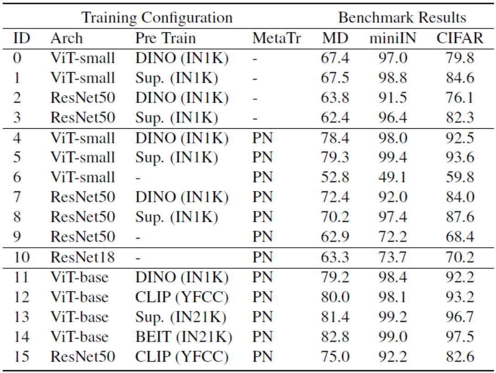
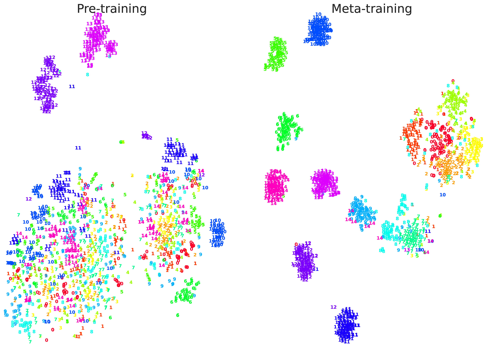
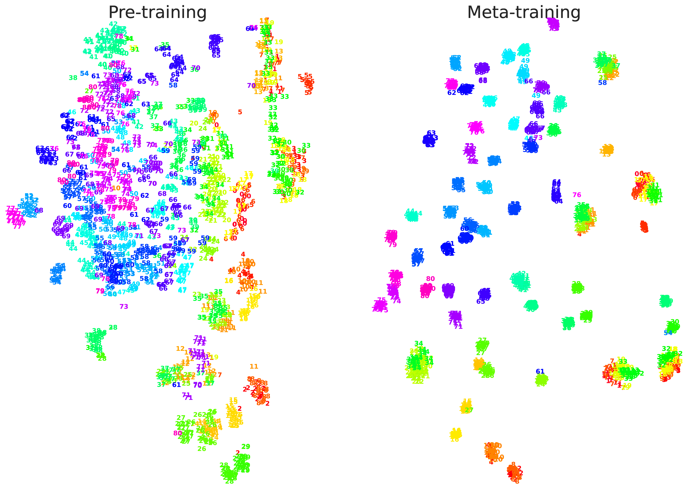
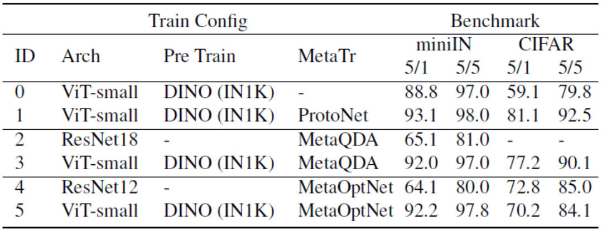
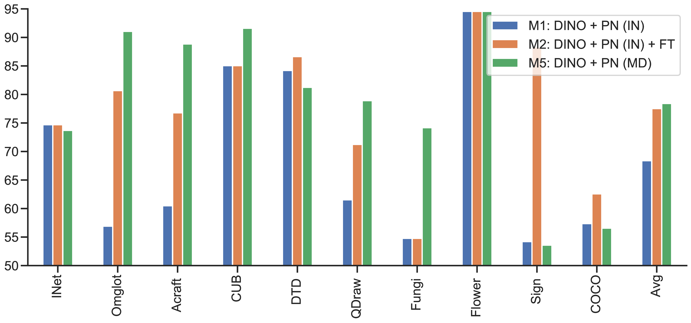
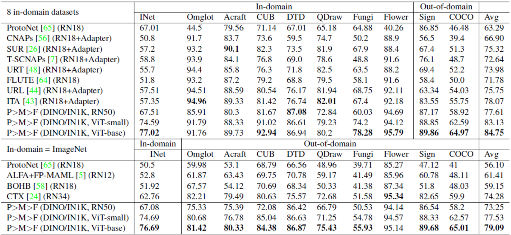
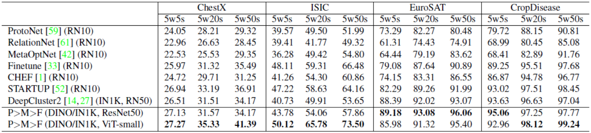

TL;DR: A three-stage pipeline for few-shot learning called PMF: Pre-training → Meta-training (ProtoNet) → Fine-tuning in meta-test.
Few-shot learning (FSL) is an important and topical problem in computer vision that has motivated extensive research into numerous methods spanning from sophisticated meta-learning methods to simple transfer learning baselines. We seek to push the limits of a simple-but-effective pipeline for real-world few-shot image classification in practice. To this end, we explore few-shot learning from the perspective of neural architecture, as well as a three stage pipeline of pre-training on external data, meta-training with labelled few-shot tasks, and task-specific fine-tuning on unseen tasks. We investigate questions such as: ① How pre-training on external data benefits FSL? ② How state of the art transformer architectures can be exploited? and ③ How to best exploit fine-tuning? Ultimately, we show that a simple transformer-based pipeline yields surprisingly good performance on standard benchmarks such as Mini-ImageNet, CIFAR-FS, CDFSL and Meta-Dataset.
How different are few-shot learning (FSL) and classical supervised learning? They are indeed very different in the sense of classical generalization theory, but we would like to argue that they are not that different in practice. While we do need millions of data to build up a good feature representation, which holds in general for both learning paradigms, but once we achieve a sensible feature representation, the task specific model can be pinned down with just a few shots. Bearing this in mind, we propose a simple pipeline for few-shot image classification which leverages the recent advance of self-supervised learning [1] and foundation models [2]. Our pipeline, pre-training → meta-training → fine-tuning (P>M>F, shown in Figure 1), focuses on how to build on top of a self-supervisely pre-trained feature network (a.k.a. feature backbone) with the simplest meta-training algorithm and task specific adaptation. Apart from the simplicity, the pipeline is advocated because (i) using foundation models amortizes the carbon cost (they are trained once and used by many) and (ii) it may actually broaden the access of the state of the art by allowing downstream research and applications to be done by more stakeholders, given that the up-front pre-training cost has already been paid.
Figure 1: A schematic of our pipeline. Following the red arrows, the pre-trained class-agnostic feature backbone is turned into a generic one, which is then personalized differently with a few shots (plus data augmentation) on different tasks.
The biggest challenge in few-shot learning is to learn the feature backbone in a class-agnostic manner, such that it can be applied to unseen classes with fast adaptation. The current conventional wisdom achieves such an out-of-distribution (OOD) generalization through learning-to-learn or meta-learning scheme. However, meta-learning is often hard to scale for various reasons (e.g., the higher-order gradient issue of MAML [3]). An alternative scheme emerges as self-supervised learning progresses, which is valid because many self-supervised losses (e.g., the DINO loss [4]) or contrastive losses (e.g., the MoCo loss [5]) are by default class-agnostic. Although self-supervised learning does not explicitly seek OOD generalization, the learned feature representation is often very generic. As an example shown in Figure 2, DINO pre-trained vision transformer (ViT) can be turned into an object detector for novel objects by solving a Normalized Cut optimization without further training [6].
|
|
|
|
|
Input image |
Normalized Cut solution |
Object detection |
Figure 2: An example showing DINO self-supervised ViT is capable of recognizing novel objects (note that pokemon is not included in the ImageNet -- the train-set of DINO). These figures are taken from [6], which show local features associated to image patches are learned to group semantically without semantic label supervision.
Given that self-supervised learning based methods yield surprising results for many computer vision problems [1], we are interested in whether self-supervised learning can be adopted to form a simple pipeline for few-shot learning. If so, how does it perform comparing to the meta-learning counterpart? Can we combine these two schemes in a simple way? To answer these questions, we evaluate the pre-training regime (including algorithm and dataset) as well as network architecture on three few-shot learning benchmarks: Meta-Dataset (MD), miniImageNet (miniIN), and CIFAR-FS, where the average accuracy is reported over various-way-various-shot tasks for MD and 5-way-5-shot tasks for miniIN and CIFAR. We take ProtoNet (nearest-centroid) classifier [7] as the standard approach for meta-testing throughout, and compare different training configurations as listed in Table 1.

Table 1: The impact of architecture, learning algorithm and dataset on downstream few-shot learning performance. Benchmarks: Meta-Dataset (MD), miniImageNet (miniIN) and CIFAR-FS. Pre-training options: DINO on ImageNet1k (IN1K) dataset, CLIP on YFCC100M dataset, BEiT on ImageNet21k (IN21K) dataset as well as an unfair supervised pre-training (Sup.) on IN1K for sanity check. For all configurations, we use ProtoNet (PN) classifier for meta-testing, which requires only the feature backbone. We can also apply ProtoNet in meta-training to update feature backbone (more details in the next section).
From the results in Table 1, we can draw the following conclusions to support the introduction of self-supervised pre-training to the FSL pipeline:
1. For a strong pre-training regime, such as DINO, the unsupervised pre-trained backbone (ID=2) performs favorably compared to fully supervised meta-trained backbones (ID=9, 10). This shows the capability of pre-training to learn class-agnostic feature representation.
2. Standard meta-training recipe does not work well for ViT (see ID=6). This somehow verifies our intuition that performing meta-training from scratch may be difficult.
3. Pre-training can be combined with meta-training to provide a significant improvement across the board compared to the conventional few-shot learning pipelines (see ID=4 vs. 6 and 7 vs. 9).
4. As a sanity check, self-supervised pre-training performs as well as or even better than supervised pre-training (see ID=0 vs. 1 and 2 vs. 3 and 4 vs. 5 and 7 vs. 8). This is noteworthy because some classes in meta-testing also appear in pre-training (e.g., miniImageNet is a subset of ImageNet); in this case, if supervision is available, meta-test tasks boil down to supervised classification on seen classes, which almost gives the upper bound of the performance.
Remark: Although self-supervised pre-training exhibits the potential to boost few-shot learning performance, it makes the pipeline incomparable to previous meta-learning algorithms as class overlap between pre-training and meta-testing may exist. But from a practical point of view, this class overlap issue is ubiquitous and it should not be the reason to prevent us benchmarking the capability of quickly constructing a classifier from very few labels.
Given the pre-trained feature backbone, we are ready to deploy the backbone to any K-way-N-shot task using ProtoNet classifier, which means the training of backbone is completely unsupervised except that we use labeled support set to construct centroids for ProtoNet classifier when deploying the backbone to a task. If there are some tasks with labeled query set, we can use these labeled tasks to further update the backbone and additionally train complementary meta-models (e.g., the synthetic gradient generator in [8]). We call this step meta-training. In the case of ProtoNet, this step is essential. As we can see from the t-SNE plots in Figure 3, DINO pre-training yields high-quality feature representation for novel tasks -- many semantic clusters have already emerged before giving semantic supervision, but the margin between clusters is still random. By meta-training the backbone using ProtoNet classification, tighter clusters are formed with clear margin between them.
|
 |
 |
|
Aircraft of Meta-Dataset |
Omniglot of Meta-Dataset |
Figure 3: Comparison of feature representation in t-SNE plot for pre-trained backbone with and without meta-training.
We also explore how other meta-learning algorithms fit our pipeline. We conduct the same experiments on miniImageNet and CIFAR-FS with two SOTA meta-learning algorithms: MetaOptNet [9] and MetaQDA [10].

Table 2: The impact of architecture and pre-training on state-of-the-art few-shot learners: MetaQDA, MetaOptNet.
From the results in Table 2, we can see that:
1. MetaQDA (ID=3) and MetaOptNet (ID=5) do improve on direct feature transfer (ID=0) and on the simple ResNet features they were initially evaluated with (see ID=5 vs. 4, 3 vs. 2).
2. With the stronger features, they are outperformed by the simpler ProtoNet (see ID=3 vs. 5 vs. 1).
This suggests previous conclusions about comparative meta-learner performance may need re-evaluating in the new regime of foundation models.
The last step in our pipeline is to fine-tune the backbone on model deployment. This is an important step since the model may be deployed to an unseen domain, where the learned feature representation may fail to generalize due to a substantial shift in data distribution. To this end, we propose a simple fine-tuning algorithm. Suppose that we observe a support set for a particular task, which consists of a few labeled examples. The idea is to fit the support set using the feature backbone with centroids derived from data augmentation of the support set. The PyTorch-like pseudo code of backbone update is shown as follows.
# supp_x: input data of support set
# supp_y: label of support set
# RandomDataAugmentation: apply random augmentations
# ProtoNet: apply backbone on data and compute loss
backbone_cpy.load_state_dict(backbone.state_dict())
optimizer = Adam(backbone_cpy.parameters(), lr=lr)
for t in range(num_steps):
aug_supp_x = RandomDataAugmentation(supp_x)
loss = ProtoNet(backbone_cpy, aug_supp_x, supp_y)
loss.backward()
optimizer.step()
We observe that the fine-tuning performance is relatively sensitive to the choice of learning rate (lr). However, existing few-shot learning problem formulation does not offer a validation set for each task to choose the best learning rate for fine-tuning. In practice, this is not a big problem when deploying the model to a particular task, because we can always annotate a few more examples as the validation set. We also notice that the best learning rates for different tasks within a domain are almost the same. This motivates us to select learning rate in a domain-wise fashion. Thus, we propose to sample 5 validation tasks from each domain and pick the best learning rate in the range of {0.0001, 0.001, 0.01, 0} that yields the best performance.
To validate the effectiveness of our fine-tuning algorithm, we conduct an experiment (see Figure 4) on Meta-Dataset to compare the results with and without fine-tuning.

Figure 4: The impact of fine-tuning (FT) during meta-test on Meta-Dataset. Two train-test split options of Meta-Dataset: a) IN: meta-train on ImageNet (INet) only and b) MD: meta-train on 8 domains except Sign and COCO which are held out for meta-test. We compare DINO + PN (IN) and DINO + PN (IN) + FT to see whether FT leads to performance boost. We compare DINO + PN (IN) + FT and DINO + PN (MD) to see what is the gap between FT and meta-training for some domains.
It is clear that, for domains in which images have very different statistics from that of ImageNet, such as Omniglot and QuickDraw, or for domains in which class semantics are distinct from those in ImageNet, such as Aircraft and Sign, meta-trained backbone performs poorly (compared to the accuracy on INet) and fine-tuning indeed mitigates performance drop (e.g., compare orange bins and green bins on Omniglot and Aircraft). Hence, we would recommend to always turning on fine-tuning when deploying the model since we can always collect a small validation set to decide if we need a positive learning rate.
Now we compare our P>M>F pipeline with prior state of the art. Results are listed in Table 3 and 4. We would like to emphasize that our results are actually not comparable to much prior work in terms of the architecture and the use of external data. We draw this comparison to demonstrate how simple changes compare against 5 years of intensive research on few-shot learning.

Table 3: Meta-Dataset: Comparison with SOTA algorithms. Please check our Arxiv paper for the citations.

Table 4: Cross-domain few-shot learning: Comparison with SOTA algorithms. Please check our Arxiv paper for the citations.